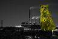
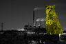

|  |
|
|  |
|
This document contains technical information about the Ultra Defragmenter. Compilation instructions, internal interfaces and other aspects of the development.
The main target of UltraDefrag development is reaching the highest level of reliability. Another target, good set of functions, is reached yet.
UltraDefrag is a GPL- licensed product. Feel free to redistribute it under certain conditions.
UltraDefrag includes portions of a few open source libraries (wxWidgets, Lua, GNU C Library, GNU libavl) as well as portions of ReactOS source code. Most of these libraries are not distributed under the terms of the GPL, but rather some other free, GPL-compatible license. For detailed information read the `Credits and License' chapter of the UltraDefrag Handbook. You should have received a copy of it along with this program; if not, go to the online version.
This document is licensed under the terms of the GNU Free Documentation License.